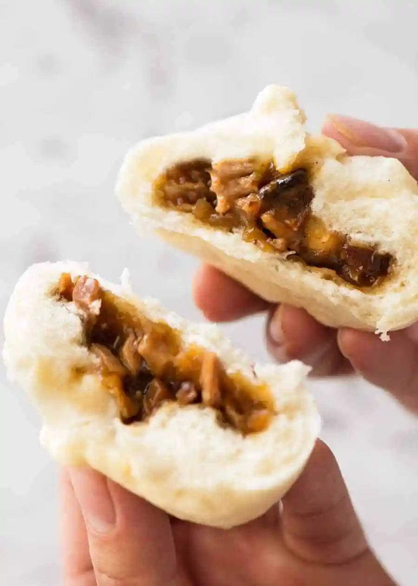

Pork Buns Recipe

How to Make Pork Buns
Pillowy soft steamed buns filled with a sweet, savoury saucy pork filling. Homemade Chinese Pork Buns are truly just like the ones you swipe off the dim sum trolleys. These will blow your mind!
Homemade Pork Buns aren’t a quick and easy recipe but they are worth the effort because it will blow your mind how similar they are to Yum Cha / Dim Sum. Plus, if you’re addicted as I am to pork buns, you’ll save stacks because it’s probably 70 – 80% cheaper to make at home.
Ingredients
Yeast activation
- 1 tsp active dry yeast powder
- 1/4 cup warm water
- 1 tbsp white sugar
Dough
- 1/2 cup warm water
- 4 tbsp white sugar
- 2 cups plain flour (all purpose)
- 1 cup cornstarch
- 1/4 cup vegetable oil
- 2 1/2 tsp baking powder
Pork filling
- 1 tbsp vegetable oil
- 1/3 cup finely chopped escalot or white onion
- 1 tbsp sugar
- 1 1/2 tbsp soy sauce , regular or light (not dark)
- 1 1/2 tbsp oyster sauce (can sub Hoisin)
- 1 tbsp sesame oil
- 1/2 cup water
- 1 tbsp cornflour dissolved in 1 tbsp water
- 1 1/2 cups Chinese Barbecue Pork , diced
Instructions
Making the dough
- Yeast Activation: Place yeast, sugar and water in a small bowl. Mix, then set aside for 10 minutes until it becomes foamy.
- Yeast Activation: Place yeast, sugar and water in a small bowl. Mix, then set aside for 10 minutes until it becomes foamy.
- Add yeast mixture, oil and water. Mix on low speed for 3 minutes until a smooth ball of dough forms. It should be soft and elastic, not so sticky it gets stuck all over your hands. Adjust with a touch of flour/water if required to get the dough consistency right.
- Cover with cling wrap and place in a warm dry place for 2 hours until it doubles in volume.Meanwhile, make Filling.
- Remove cling wrap, scatter over baking powder. Return to stand mixer and mix on low for 2 minutes.
- Turn dough out onto work surface, sprinkle with flour. Knead lightly to form a smooth round disc.
Making buns
- Cut dough into 4 pieces. Take one piece, roll into an even log, cut into 3 pieces (so 12 pieces in total).
- Take one piece of dough, cover remaining with cling wrap or tea towel.
- Roll into round 4.5" / 11 cm in diameter, making the edges thinner.
- Place dough in hand, put 1 1/2 tbsp of Filling in the centre.
- Pinch 8 pleats around the edges. Then gather the pleats together one by one to seal the bun. Pinch the top the twist.
- Repeat with remaining dough - make 12 in total.
- Cover buns loosely with cling wrap and leave in a warm place for 15 minutes.
Steaming
- Line a large bamboo steamer (or other steamer) with parchment paper punctured with holes.
- Place 6 to 8 buns on paper, cover with steamer lid.
- Pour about 4 cm / 1 1/2 inches in a wok / pot (steamer should not touch water) and bring to rapid simmer over medium high.
- Place steamer in wok, then cook for 12 minutes. Check water halfway through, top up if required.
- Buns are ready when they spring back when touched, and the buns have formed a smooth skin.
- Remove steamer from wok, serve warm!
Filling
- Heat oil in a saucepan over medium heat. Add eschalots and cook for 2 minutes.
- Add sugar, soy sauce, oyster sauce, sesame oil and water. Mix.
- While stirring, slowly pour cornflour mixture in. Mix until smooth.
- Stir in pork. Cook until sauce is thickened, 1 - 1 1/2 minutes (see video for consistency). Set aside to cool (thickens when cools).